🥩
Specialità Araba
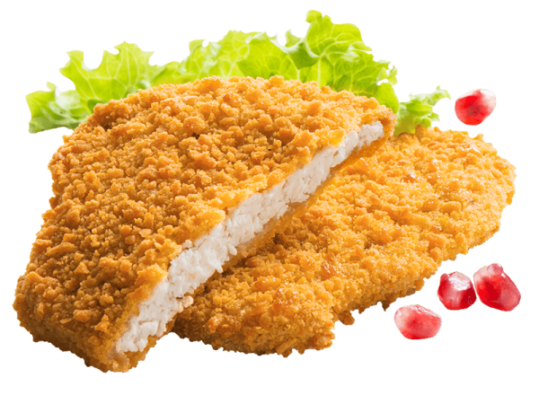
€5,50Cotoletta di Pollo
Con patatine fritte — ricetta tradizionale marocchina
€ 5,50
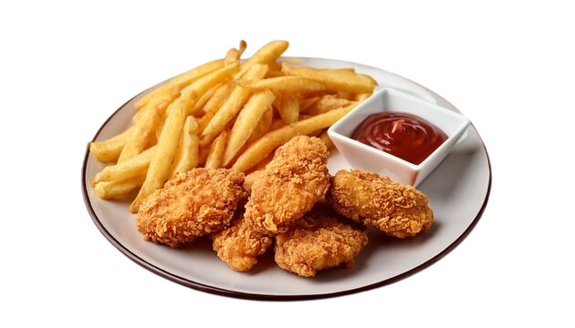
€5,50Nuggets di Pollo
Con patatine fritte — croccanti fuori, teneri dentro
€ 5,50
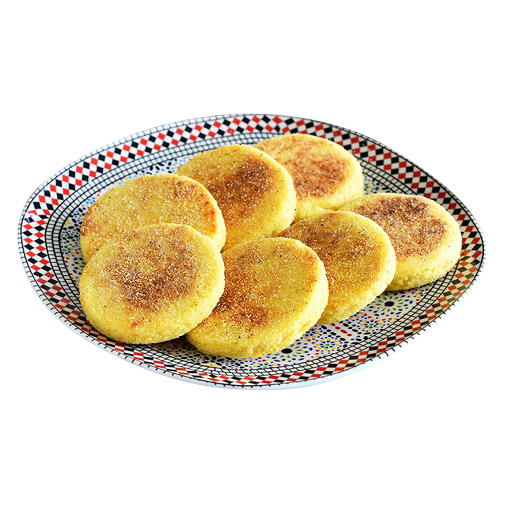
€1,50Msemen / Harcha
Pane berbero tradizionale, cotto sul momento
€ 1,50 / cad
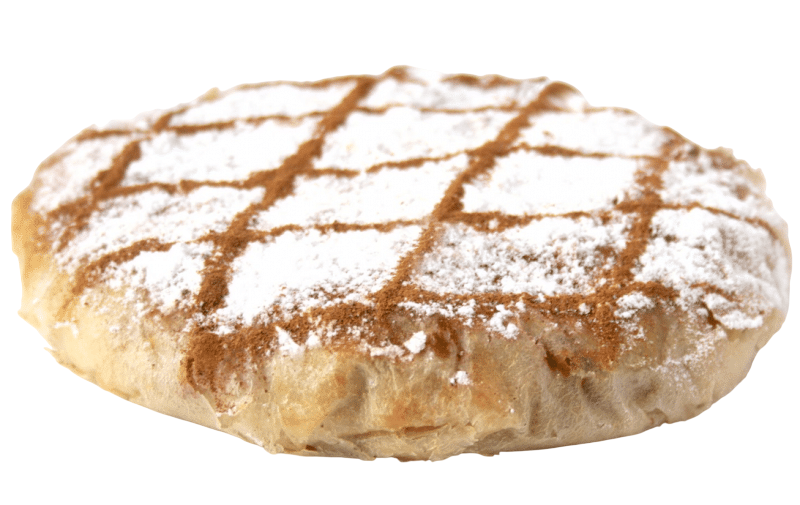
€6,00Pastilla di Pollo
Pasta fillo, pollo speziato, mandorle e cannella
€ 6,00
🌮
Tacos & Snack
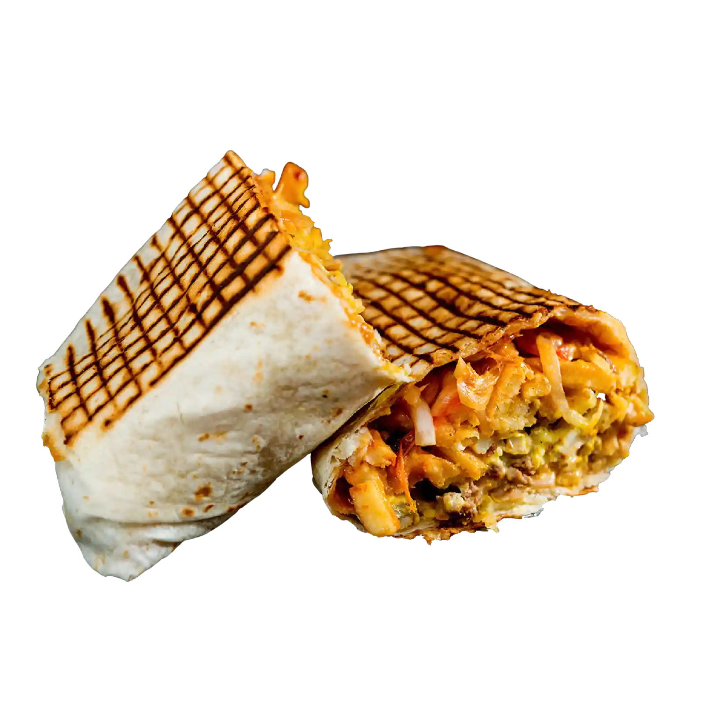
€6,00Tacos Francese
Carne, formaggio fuso, patatine e salse — formato maxi
€ 6,00
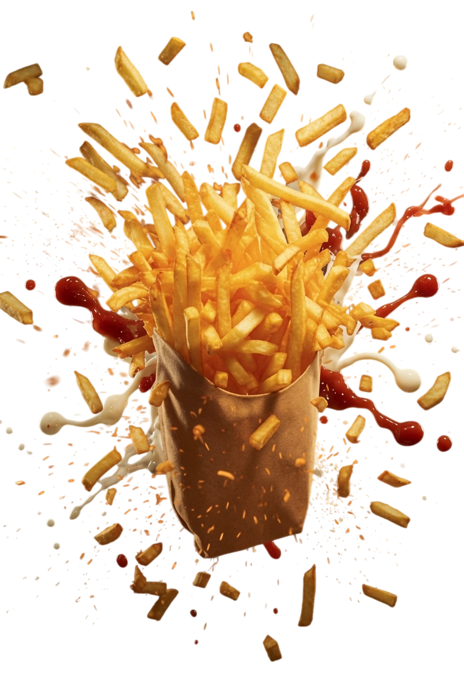
€1,50Patatine Fritte
Croccanti, servite calde con salsa a scelta
€ 1,50
🥤
Frullati e Bevande
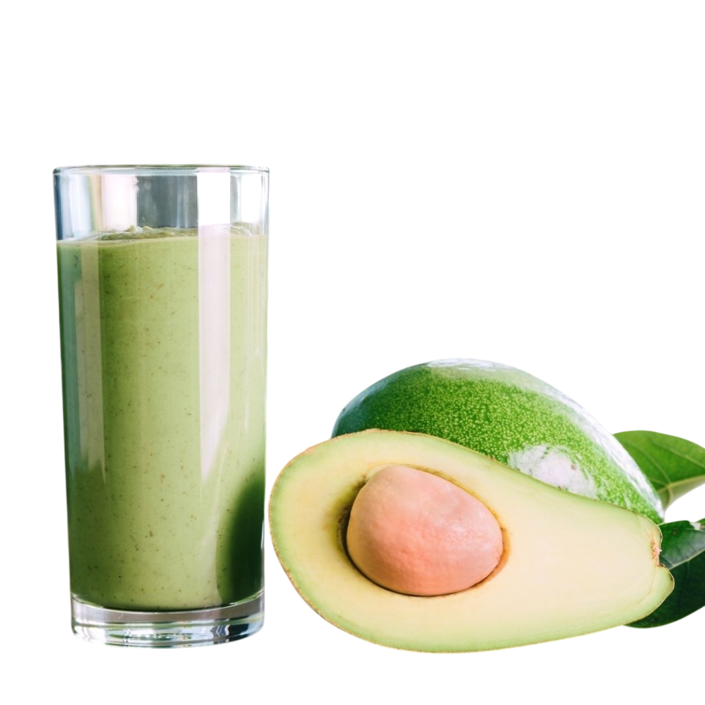
Frullato di Avocado
Avocado fresco frullato con latte e miele — cremoso e nutriente
Medio €3,00
Grande €4,00
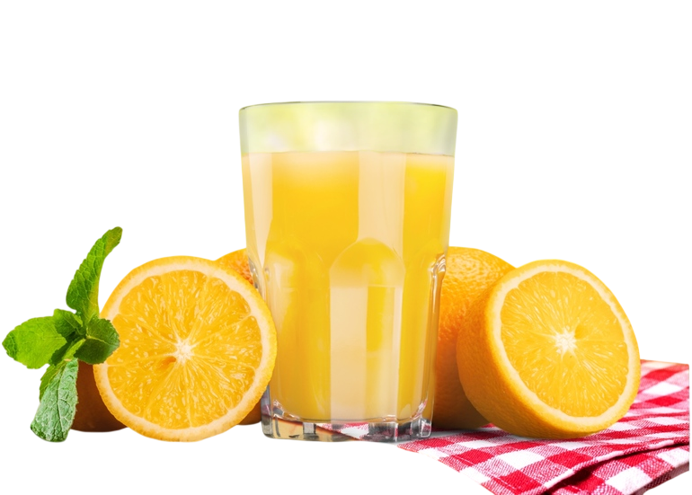
€2,50Spremuta d'Arancia
Arance fresche spremute al momento — senza zuccheri aggiunti
€ 2,50
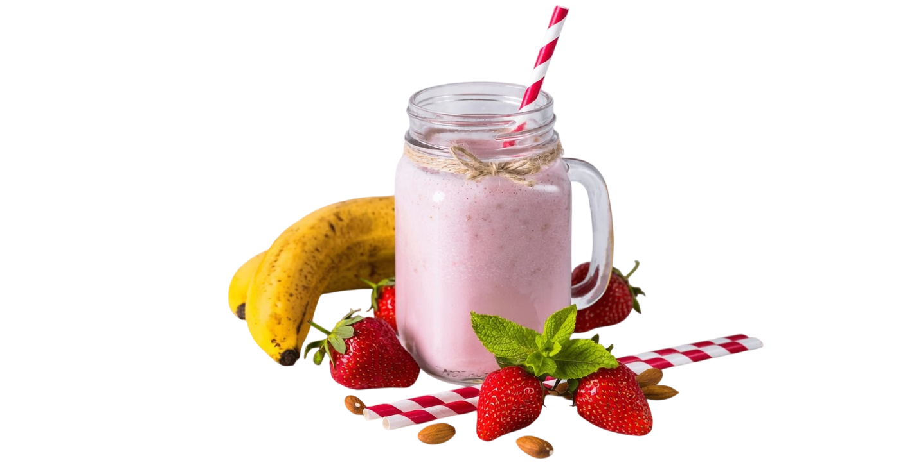
€4,00Frullato Argana
Mix di frutta fresca di stagione — la firma della casa
€ 4,00
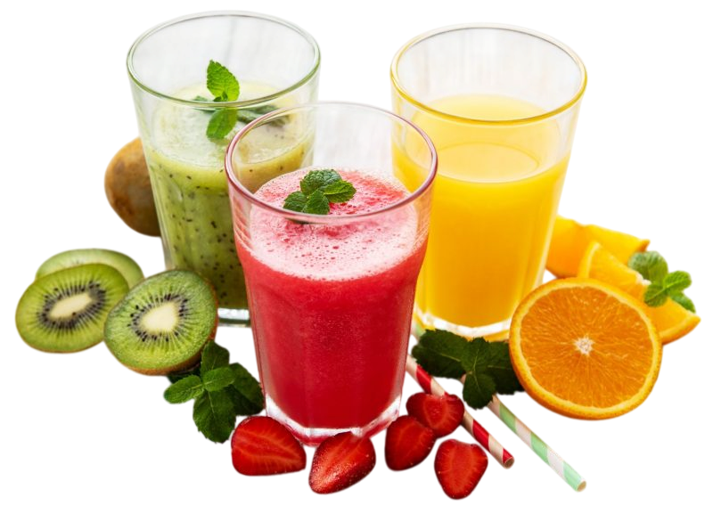
€4,00Cocktail Frutta
Con frutta di stagione — fresco, colorato, vitaminico
€ 4,00
€1,00
Tè alla Menta
Tè verde marocchino con menta fresca — tradizione autentica
€ 1,00
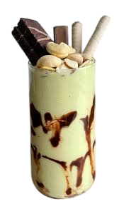
€5,00Zazsa Avocado
Avocado e banana con frutta secca — proteico e saziante
€ 5,00